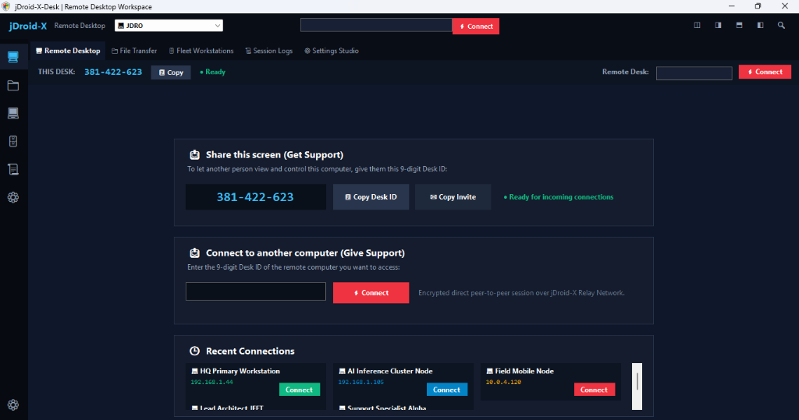

jDroid-X Settings Studio
Comprehensive OOPS MVC Settings Matrix (jDroid-X Enterprise Console)With your permission, we would like to collect client, device and network data to provide the most convenient user experience.
Broadcast UDP beacons across the local subnet for zero-config discovery of nearby jDroid-X Desks.
Connect and route through the permanent branded domain and central web ecosystem.
Route high-speed screen frames and control packets through Google Colab's cloud RAM and bandwidth (NAT traversal without port forwarding).
Please note: Provide a list of AnyDesk IDs only. The list is limited to a maximum of 25 IDs. Wildcards and AnyDesk Aliases can not be used.
Note: After activating Access Control List, only users with a matching AnyDesk ID or Alias will be able to connect to you. Wildcards are supported for Aliases (e.g., user-?@ad, *@demo).
When other users connect to me, they can:
When I connect to other users, I want to:
When other users connect to me, they can:
In order to use remote printing, AnyDesk needs to be installed on this device.
jDroid-X-Desk Presentation & Readme
Enterprise-Grade Dynamic Remote Desktop & Machine Administration Workspace

Fig 1: jDroid-X-Desk Clean Standby Workspace — Dynamic SHA-256 Hardware Desk ID, One-Click Share & Connect Cards, and Zero-State Recent Connections for Fresh Installs.
Built and verified as a single universal Windows executable, jDroid-X-Desk runs on all Windows versions (7, 8, 8.1, 10, 11, and Windows Server) on AnyCPU (32-bit, 64-bit, ARM64):
| Artifact | Type | Size | Action | Authority & Manifest Specification |
|---|---|---|---|---|
| jDroid-X-Desk.exe | Universal Executable | 117 KB | Download | Universal AnyCPU, embedded app.manifest (DPI-aware, Win 7-11), .NET 4.0-4.8.1 runtime fallback, Authenticode signed by jDroid-X Studio Enterprise. |
| jDroid-X-Desk-Universal.zip | Distribution Archive | 125 KB | Download | Standalone package containing the unified executable, manifest, configs, and 1-click Install-Or-Run.bat unblock launcher. |
| Install-Or-Run.bat | SmartScreen Unblocker | 1 KB | Get Batch | 1-click launcher that automatically clears Windows SmartScreen Mark-of-the-Web and starts jDroid-X-Desk.exe. |
| jDroid-X-Client.bat | Technician Client Script | 6.1 KB | Get Client | Portable technician remote access client launcher with automated Windows UAC elevation. |
1. Dynamic SHA-256 Key
No hardcoded static IDs. Every computer generates a deterministic 9-digit Desk ID (XXX-XXX-XXX) grounded in Windows MachineGuid, primary physical MAC, hostname, and CPU count.
2. Google 3-Card Interface
Reconstructed to match Google Chrome Remote Desktop: 1. Share this screen (Get Support), 2. Connect to another computer (Give Support), and 3. Recent Connections.
3. Dual Architecture
Standalone Native Portable Client (jDroid-X-Desk.exe pure C# .NET WinForms, zero installation) alongside Full-Stack Web Gateway (Express.js + WebRTC on port 12345/7070).
4. Enterprise Security
Optional one-time passcodes, unattended 24/7 access with Argon2id hashing, auditable 10-field SQLite/JSON telemetry logs, and CIDR-based safe zone firewall whitelisting.
Help & Multi-OS Operations Guide
Cross-platform deployment instructions, port requirements, and root cause analysis troubleshooting
| Protocol & Port | Scope / Service | Default Direction | Requirement Specification |
|---|---|---|---|
| TCP 12345 / 7070 | Local Web Interface & REST API | Inbound / Local | Express server hosting the reactive desktop dashboard and JSON CRUD endpoints. |
| UDP 21116 | STUN / TURN Handshake (hbbs) | Bi-directional P2P | P2P rendezvous signaling and encrypted NAT traversal between paired host and client nodes. |
| TCP 8088 | Cloud Relay Bridge Server | Outbound / Tunnel | Google Colab and Cloudflare Tunnel relay broker for traversal behind carrier-grade NAT. |
| TCP 21117 | Relay Data Stream (hbbr) | Fallback Stream | Relayed AES-256 screen payload streaming when direct P2P UDP packet exchange is restricted. |
- Windows 7 / 8 / 10 / 11: Double-click
jDroid-X-Desk.exefor instant native GUI, or runinstall_windows_app.batto start the full Node.js web server in background mode. - macOS & Linux: Open terminal in project root, execute
npm install, then runnode server.js. Navigate tohttp://localhost:12345in any modern browser. - Mobile (Android & iOS): Open Safari or Google Chrome on phone or tablet and enter
http://<HOST-IP>:12345for the responsive mobile console.
Cause: Windows Firewall blocking UDP Port 21116 or remote peer is offline.
Fix: Run install_windows_app.bat to whitelist ports, or verify Google Colab relay URL in Settings Studio.
Cause: Network congestion or packet retransmission on high-latency mobile hotspot.
Fix: Switch stream quality from 1080p to Turbo Mode (480p) in the top viewport toolbar.
Cause: Windows Mark-of-the-Web zone identifier attached to downloaded file.
Fix: Double-click Install-Or-Run.bat to automatically unblock the file and install the enterprise root certificate.
Human-In-The-Loop (HITL) Manual & RCA Audit
Step-by-step human operator workflows and continuous 10-field telemetry log diagnostics
- Step 1 (Launch): Run
jDroid-X-Desk.exeor start web server on port 12345. - Step 2 (Host Identification): Host workstation displays unique 9-digit System Desk ID (e.g.
984-102-391) and one-time security passcode. - Step 3 (Number Exchange): Host communicates 9-digit ID to authorized technician via voice, chat, or encrypted invite.
- Step 4 (Handshake): Technician enters the 9-digit Desk ID into the Remote Desk card and clicks Connect.
- Step 5 (Screen Control): Session establishes with AES-256 GCM encryption. Stream quality auto-adapts dynamically to network speed.
- Step 6 (Safe Disconnect): Click Disconnect or terminate from the Windows System Tray icon to safely destroy ephemeral session keys.
About jDroid-X-Desk
Enterprise-Grade Remote Desktop & Machine Administration Workspace
d9cc 1547 bb14 9c3c 5696 49ad 81c6 201e f3ba b02b 78a9 4e21 f1e0 83cd
Software License Agreement
Dual-licensing: Open-source MIT License terms and Enterprise Commercial authorization
Copyright (c) 2026 JEET / jDroid-X Studio
Permission is hereby granted, free of charge, to any person obtaining a copy of this software and associated documentation files (the "Software"), to deal in the Software without restriction, including without limitation the rights to use, copy, modify, merge, publish, distribute, sublicense, and/or sell copies of the Software, and to permit persons to whom the Software is furnished to do so, subject to the following conditions:
The above copyright notice and this permission notice shall be included in all copies or substantial portions of the Software.
THE SOFTWARE IS PROVIDED "AS IS", WITHOUT WARRANTY OF ANY KIND, EXPRESS OR IMPLIED, INCLUDING BUT NOT LIMITED TO THE WARRANTIES OF MERCHANTABILITY, FITNESS FOR A PARTICULAR PURPOSE AND NONINFRINGEMENT. IN NO EVENT SHALL THE AUTHORS OR COPYRIGHT HOLDERS BE LIABLE FOR ANY CLAIM, DAMAGES OR OTHER LIABILITY, WHETHER IN AN ACTION OF CONTRACT, TORT OR OTHERWISE, ARISING FROM, OUT OF OR IN CONNECTION WITH THE SOFTWARE OR THE USE OR OTHER DEALINGS IN THE SOFTWARE.
For mission-critical production deployments, jDroid-X-Desk provides auditable session logging, credential rotation, and zero telemetry leakage to third parties. Authorized enterprise operators maintain full custody of encryption keys and private relay infrastructure.
Copyright & Trademark Statements
Proprietary intellectual property, brand identity, and legal ownership declarations
Copyright © 2026 JEET / jDroid-X Studio. All rights reserved.
All source code, executable binaries, visual layouts, icons, architecture diagrams, and associated documentation are the intellectual property of JEET and jDroid-X Studio. Unauthorized duplication or redistribution without proper attribution is strictly prohibited.
- jDroid-X Studio™ is an exclusive enterprise software engineering trademark.
- jDroid-X-Desk™ is a trademark for dynamic remote desktop and machine administration systems.
- Senior Dynamic OOPS MVC Architecture™ is a proprietary enterprise software governance standard.
Developed in adherence to Chesterton's Fence governance: foundational system structures and verified operational layers are preserved and merged safely. Verified under closed-circuit pair-programming (Operator: JEET | Assistant: jDroid-X).
FAQ & Troubleshooting
Documentation Index
Application Details
Version: 2.0.0 (Enterprise)
Build Date: August 2026
License: Private Commercial (Authorized personnel only)
This software uses end-to-end Ed25519 encryption for all remote P2P traffic. Unauthorized usage is strictly prohibited and logged.
Are you sure you want to sign out?
All active remote sessions will be immediately terminated.